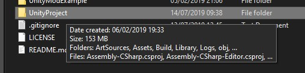
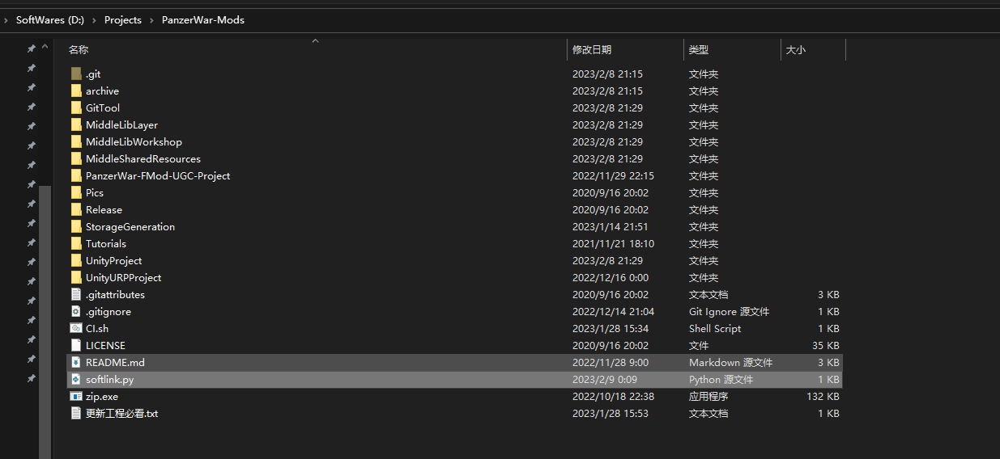
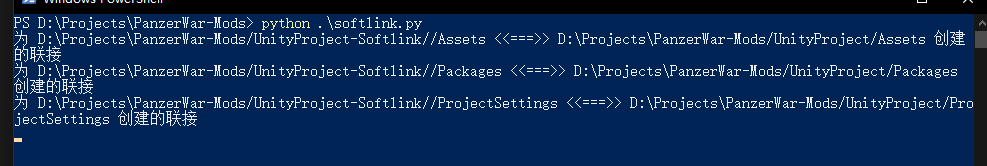
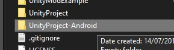
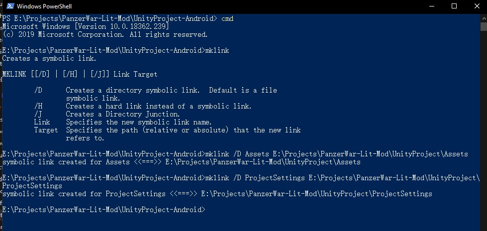
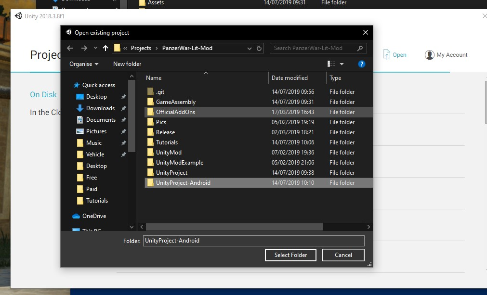

04. Multi-Platform Build 多平台打包
1. Description 介绍
Support for both Windows and Android is a must for sharing the Mod to the community.Here is a quick way for you to build two platforms without swtiching the platform. We will need to use soft link. 对于分享模组到社区，支持 Windows 与 Android 的模组文件是必不可少的。为了避免来回切换平台，我们需要将项目进行软连接，建立 Windows 与 Android 同步资源的打包环境。 
2.1 Python 工具
import os
PRJ_NAME="UnityProject"
root= os.getcwd() + "/" + PRJ_NAME + "-Softlink"
subFolders=["Assets","Packages","ProjectSettings"]
if not os.path.exists(root):
os.mkdir(root)
def mkStr(str):
tmp = r'"' + str + r'"'
return tmp
for subFolder in subFolders:
src = os.getcwd() + "/" + PRJ_NAME +"/" + subFolder
dstFolder = root + "/"
dst = dstFolder + "/" + subFolder
if not os.path.exists(dstFolder):
os.mkdir(dstFolder)
cmd = "mklink /J" + " " + mkStr(dst) + " " + mkStr(src)
os.system(cmd)
input()
将以上代码放入文本，并改名为 softlink.py 放在 与 UnityProject 同级的目录，然后运行 Python 脚本。 （如果是使用 UnityURPProject，则将 PRJ_NAME="UnityProject" 改为 PRJ_NAME="UnityURPProject"）
 
2.2 Cmd 命令行式
Suppose you have a Mod project with Windows build platform here. And,you want to build Android platform now. 假设你已经有了一个针对 Windows 平台的打包环境，你想要增加一个 Android 平台的打包环境  First,create a folder somewhere else. Then,open the cmd and cd to that folder. Refer the following picture. 首先，在其他目录下创建一个文件夹。 然后打开 CMD ，用 CD 命令移动到这个文件夹。 参考下图。  Make a folder link，refer command on the picture. 创建一个目录软连接，参考图上的命令。
3. Add in UnityHub 在 Unity Hub 添加项目
 Then,you can open this folder in Unity and the files are the same all the time as what in your Windows project. Then you can switch its platform to Android.
然后你就可以给 Unity 额外增加一个项目工程打开，切换为 Android 平台。